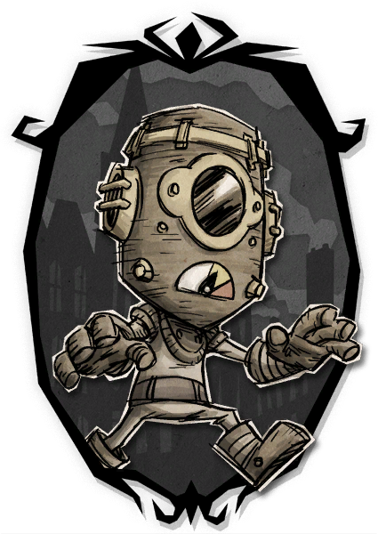
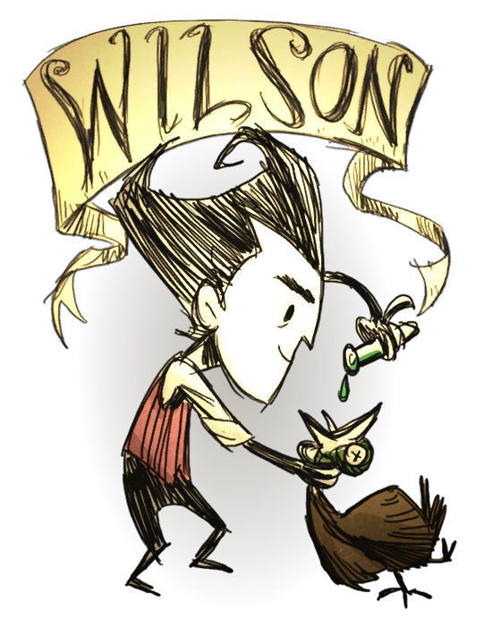

The Story Line of Don't Starve is not just contained within Adventure Mode. The developers have expanded the lore through supplemental material such as animated promotional videos or hidden puzzles. Some clues can also be gleaned from character quotes. The Story Line continues in Don't Starve Together, the sequel to Don't Starve. On September 25, 2014, Klei developer Kevin Forbes posted a rough canonical timeline for Don't Starve. This page will incorporate this. However, as it has been many years since this post, its accuracy can be questioned. For instance, this post was written before the reveal of Shipwrecked.
  Don't Starve-WIKI1873 - The Old Mill crossing is constructed. 1890s - 1906: Time period of William Carter's origin story. July 26, 1901: William Carter, a stage performer, departs from Liverpool, England aboard a ship named Quest to move to the United States.[3] In America, William tries to make a living as a stage performer. November 11, 1903: The twins Abigail Lillian Carter and Wendy Carter are born.[5] They are the daughters of Jack Carter, William's brother. William finds himself in debt. He receives a postcard from Jack who lives on the West Coast. August 15, 1904: William buys a ticket for a train going from New York City, New York to San Francisco, California.
A Shadow Watcher stands in the ruined remains of Maxwell's apartment. Maxwell takes the Nightmare Throne becoming the "king" of the Constant, bending it to his will and creating many creatures to inhabit it. Charlie becomes the Night Monster.
August 23, 1904: The Daily Speaker newspaper reports a story about a passenger train striking an Abernethy & Parker Circus wagon at the Old Mill crossing. Dozens are injured, and one man is missing but presumed dead. Based on his description, the man is most likely William Carter. This is the third incident at this crossing since its construction in 1873.[2] After the train accident, William writes a postcard to Jack from North Fork, Nevada, in which he reveals he is alive and that he has found a book containing "terrifying new possibilities." June 6, 1905: William Carter requisitions advertisements in The San Francisco Call for a lady assistant. He appears to be working under a new name: "Maxwell The Great." He no longer wears glasses, and appears very confident. He is now living in San Francisco, California. Maxwell appears to be holding rituals and summoning strange beings. He is writing notes about what he's seen. Maxwell has acquired an assistant, Charlie, and has become a very popular act. He is using the Shadow Creatures from his book as part of his performance. In a letter to Maxwell, Charlie talks about working on a new finale when she comes back from her sister's place. April 17, 1906: The night before Maxwell and Charlie's last show, Charlie visits Maxwell's apartment. She finds his hidden room behind the fireplace. As she takes a look at his book, shadowy hands appear in the other room. They are vanquished by Maxwell who magically manifests from a photograph on the wall. Charlie uses her lantern to look at the walls of his secret room, where Maxwell has scribbled troubling words and strange symbols. Distressed by what she sees, she runs out of the apartment with his outfit. She leaves a letter revealing that he had been out of contact with her for days. That night, Maxwell and Charlie perform their final act. Maxwell attempts to pull shadows from the book, but they try to pull him in. Multiple shadow hands emerge from the book, grabbing Maxwell and Charlie. Charlie is later officially reported missing on this date.

Helaas geen afbeelding gevonden!